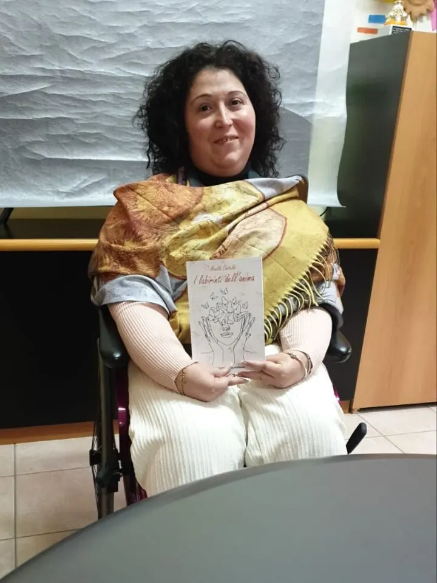
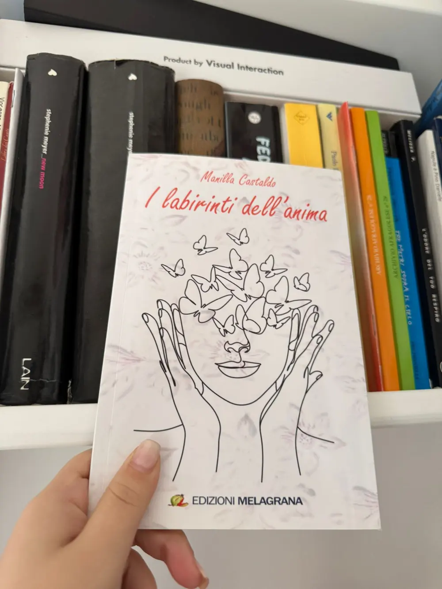

Quando il respiro manca, nascono le parole

Ci sono momenti in cui il corpo cambia senza chiedere permesso. Lo fa lentamente, poi tutto insieme. Nel mio caso, è successo nel 2023, quando il respiro è mancato e da lì sono nate le parole.
Dopo aver contratto quella che viene comunemente chiamato covid, la mia salute si è ulteriormente debilitata. La respirazione ha iniziato a vacillare, le gambe a gonfiarsi. Il respiro, che fino a quel momento avevo dato per scontato, è diventato fragile, incerto, prezioso.
Quando il respiro ha iniziato a mancare
Ci siamo subito attivati, mettendoci in contatto con l’Ospedale Monaldi, poiché avevo le apnee notturne. Dopo un ricovero e numerosi accertamenti, è arrivata una decisione che avrebbe cambiato radicalmente la mia quotidianità: l’uso di un ventilatore polmonare durante la notte.
Accettarlo non è stato semplice.All’inizio ha portato con sé nuove difficoltà, come l’aumento delle secrezioni. Col tempo, la necessità è cresciuta: dal ventilatore notturno sono passata ad averne bisogno anche durante il giorno.
Non si tratta solo di un ausilio medico.È un cambiamento che entra nella vita, nelle abitudini, nel modo in cui ci si percepisce.Un cambiamento che costringe a fermarsi, ad ascoltarsi, a fare i conti con la propria vulnerabilità.
Dal bisogno d’aria alle domande interiori
Dal 2023 in poi, tanti pensieri si sono affollati nella mia mente. Domande che non hanno sempre una risposta. Paure, silenzi, attese.
Mi sono affidata alla fede, alla resilienza, alla speranza. Ma, in tutto questo, il bisogno d’aria era sempre presente. A volte lieve, a volte più intenso. Ci sono stati (e ci sono ancora) momenti in cui respirare diventa difficile, in cui il fiato sembra non bastare mai.
La mancanza d’aria non è solo fisica.Diventa anche emotiva. Esistenziale.
Dal 2023 al 2024: la nascita del libro tra un respiro e l'altro.
Tra il 2023 e il 2024, senza che fosse una decisione lucida o programmata, ho iniziato a scrivere. Non l’ho voluto: è accaduto.
I pensieri mi giravano in testa, si accavallavano, chiedevano spazio. La carta è diventata un luogo sicuro, un modo diverso di respirare quando il respiro sembrava mancare. In quel periodo ho scritto il mio primo libro di poesie, giorno dopo giorno, parola dopo parola.
Scrivere non era una terapia dichiarata.Era una diventata necessità. Una via di fuga.
“I labirinti dell’anima”: nascita di un libro autobiografico
Da quella scrittura istintiva è nato “I labirinti dell’anima”, il mio primo libro di poesie, pubblicato nel settembre del 2024. Edito da Edizioni Melagrana.
È un libro profondamente autobiografico. Racconta la mia esperienza, il mio corpo che cambia, la mia fame d’aria. In molte poesie parlo proprio di questo: della sensazione di non riuscire a respirare pienamente, di quella pressione invisibile che accompagna ogni respiro.
A ogni poesia ho associato un disegno line style, essenziale, con l’intento di accompagnare il lettore dentro il mio stato d’animo, dentro quella sensazione sottile e costante che è la mancanza d’aria.
L’obiettivo non è spiegare, ma far sentire.Portare chi legge a immergersi, anche solo per un attimo, in quella percezione sottile e costante che è la mancanza d’aria.

Affetti, speranza e fede
Accanto al dolore, nel libro trovano spazio anche gli affetti, l’amore, la speranza e Dio.Perché nessuna esperienza è fatta di un solo colore. Anche nei momenti più difficili, esistono legami che tengono in vita, parole che salvano, una fede che sostiene.
Pur parlando di me, ho cercato di raccontare tutto con delicatezza, affinché chi legge potesse riconoscersi, sentire una risonanza, non sentirsi solo.
"I labirinti dell’anima” non nasce per insegnare qualcosa. Nasce per condividere.
Ho scritto così come mi è uscito, senza filtri, senza costruzioni. Questo libro è un pezzo di me, della mia storia, di quel tratto di strada che va dal 2023 al 2024.
Scrivere, per me, è diventato un altro modo di respirare.E forse, tra queste pagine, anche chi legge può trovare il proprio.
Se desiderate approfondire o leggere il libro, trovate qui sotto i contatti:
Dal sito dell'editore CLICCA QUI
Da vinted se lo vuoi con il segnalibro CLICCA QUI
